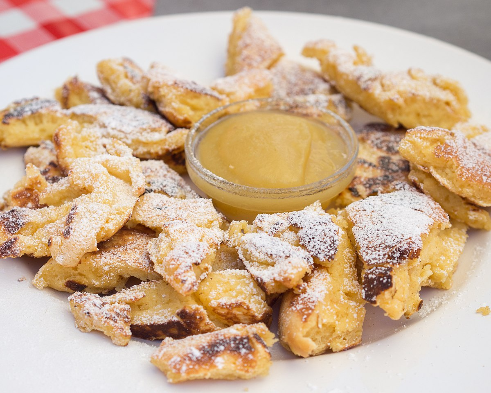

Recipe: Kaiserschmarrn

Description
A fluffy german pancake-like food product, as adjusted to my
partner's taste.
Ingredients
- 4 large eggs (separated)
- 1 pinch salt
- 0.5 teaspoon vanilla extract
- 1 5/8 cups milk
- 1 cup flour
- 1-2 tablespoons butter
Steps
- In a medium bowl, beat the egg whites to soft peaks,
adding a pinch of salt toward the end.
- In a separate large bowl, beat the egg yolks and
vanilla until the mixture is light yellow.
- Add the milk and flour–a little at a time to avoid
lumps–and blend well.
- Fold in the egg whites and let the batter rest for
about 10 minutes.
- Melt 1 to 2 tablespoons of butter in a 10- to 12-inch
frying pan.
- Stir the batter again gently and pour it into the hot
pan.
- Cover the pan and let the pancake cook for 10 minutes
over medium heat. Flip over and cook about 10 minutes
more; you might have to cut it into several portions
to flip.
- Cut or pull the pancake apart into bite-size pieces
while it continues to cook.
- When it is browned a bit, it is ready to serve.
- If you like a chewier consistency, let the pancake cool
down a bit.